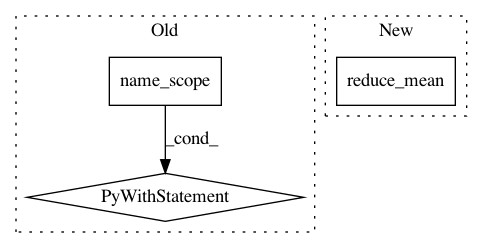

780dcd9fd372afa8524a6515eec6a4c90b1494c9,Reinforcement_learning_TUT/8_Actor_Critic_Advantage/AC_CartPole.py,Actor,__init__,#Actor#Any#Any#Any#,22
Before Change
class Actor(object):
def __init__(self, n_features, n_actions, lr=0.001):
with tf.name_scope("inputs"):
self.state = tf.placeholder(tf.float32, [n_features, ], "state")
state = tf.expand_dims(self.state, axis=0)
self.act_index = tf.placeholder(tf.int32, name="act")
self.advantage = tf.placeholder(tf.float32, name="adv") // TD_error
with tf.variable_scope("Actor"):
l1 = tf.layers.dense(
inputs=state,
units=20, // number of hidden units
After Change
)
with tf.variable_scope("squared_TD_error"):
self.td_error = tf.reduce_mean(self.r + GAMMA * self.v_next - self.v)
self.loss = tf.square(self.td_error) // TD_error = (r+gamma*V_next) - V_eval
with tf.variable_scope("train"):
self.train_op = tf.train.AdamOptimizer(lr).minimize(self.loss)
In pattern: SUPERPATTERN
Frequency: 3
Non-data size: 3
Instances
Project Name: MorvanZhou/tutorials
Commit Name: 780dcd9fd372afa8524a6515eec6a4c90b1494c9
Time: 2017-03-09
Author: morvanzhou@gmail.com
File Name: Reinforcement_learning_TUT/8_Actor_Critic_Advantage/AC_CartPole.py
Class Name: Actor
Method Name: __init__
Project Name: tensorlayer/tensorlayer
Commit Name: 0c361196698684acd135c3bae372c92692c1d5e0
Time: 2017-02-14
Author: dhsig552@163.com
File Name: tensorlayer/cost.py
Class Name:
Method Name: cross_entropy
Project Name: zsdonghao/text-to-image
Commit Name: 74796ff02e9425ca336f595978fe6e7c422c0378
Time: 2017-04-11
Author: dhsig552@163.com
File Name: tensorlayer/cost.py
Class Name:
Method Name: cross_entropy